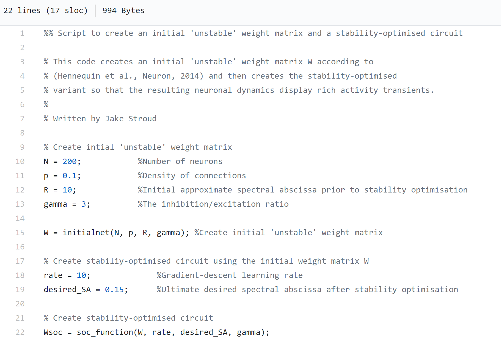

Code
Python code for my recent papers is available from my Github page. Matlab code is also available at ModelDB and Github for creating 'stability-optimised circuits' (Hennequin, et al., Neuron, 2014) and for recreating the main results of Figure 1 in our paper Motor primitives in space and time via targeted gain modulation in cortical networks. See an example screenshot of one of the codes below.
